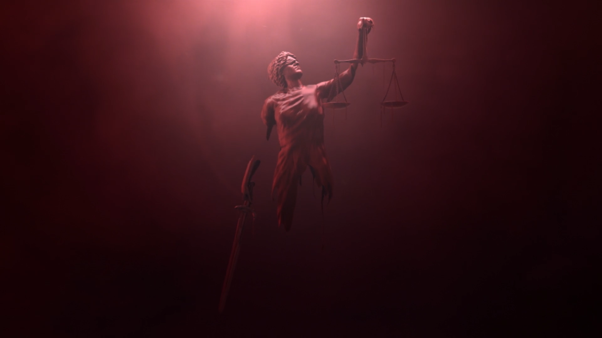

Experiência Comprovada
Mais de 20 anos de atuação em casos complexos
Equipe Especializada
Profissionais altamente qualificados
Compromisso com o Cliente
Atendimento personalizado e dedicado
Resultados Efetivos
Histórico comprovado de sucesso
0+
Anos de Experiência
0+
Casos Resolvidos
0+
Profissionais